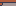

Equipe
Feito no Instituto Federal de São Paulo
Projeto Interdisciplinar do Técnico em Desenvolvimento de Sistemas integrado ao Ensino Médio, IFSP Campus São Paulo, 2026.
Eduardo de Lazzari Oliveira
Guilherme Pereira de Oliveira
João Paulo Queiroz Costa
Objetivos
Por que o Pitagorome existe
- Criar um jogo educativo voltado ao Ensino Médio.
- Integrar conteúdos matemáticos a situações contextualizadas.
- Usar elementos de gamificação para estimular o interesse.
- Incentivar o raciocínio lógico e a resolução de problemas.
- Aprender por exploração, interação e progressão.
Estrutura do repositório
scenes/ cenas e ambientes scripts/ scripts em GDScript assets/ recursos gráficos data/ dados do jogo tests/ testes Site/ este site project.godot
Como é feito

- Engine
- Godot Engine 4
- Linguagem
- GDScript
- Plataforma
- HTML5
- Gráficos
- Pixel Art 2D
- Perspectiva
- Top-down
Cena principal: scenes/intro/intro_scene.tscn. Abra o projeto pelo Godot Engine 4.